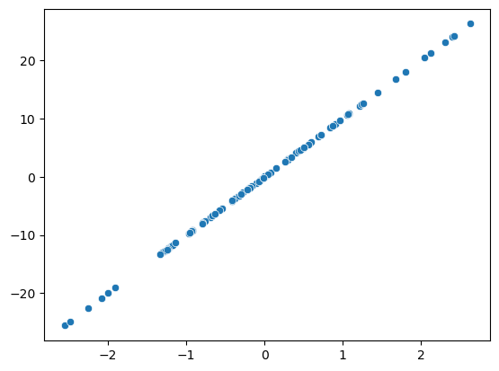

import numpy as npPython Basics
Loading necessary packages
To start let’s load NumPy, a package for scientific computing with Python. We usually load it as the np shorthand.
Let’s initialize two arrays
a = np.random.randn(1,5)
b = np.random.randn(1,5)Dot product
To perform a dot product of two arrays, the shape of the arrays should match. Let’s get the shape of our arrays.
a.shape, b.shape((1, 5), (1, 5))both arrays have a shape of \((1, 5)\).
In general, the shape of the two arrays should be \((n, k) (k, m)\), where \(k\) is the common dimension of the two arrays.
For our example, we can transpose the array b to make the shapes match. The NumPy command for transposition of arrays is .T.
a.shape, b.T.shape((1, 5), (5, 1))Now that the two arrays have the matching shapes, we can calculate their dot product using the @ operator.
a @ b.Tarray([[0.56077435]])The result of the dot product is an array of shape \((1,1)\), or a scalar. In general, the result of a dot product has a shape of \((n, m)\)
Best fit line
Let us now simulate a some data and find the best fit line, a line that minimizes the average distance of all data points to the line.
Here our X is a vector of shape \((100, 1)\) samples from a standard normal distribution. Here we have \(100\) points with \(1\) feature for each point.
The y is 10 times x, with the shape \((100, 1)\).
\[y = X \cdot coeff\]
X = np.random.randn(100, 1)
coeff = np.ones((1, 1)) * 10
y = X @ coeff
y.shape(100, 1)Data visualization
To visualize the data, we can use Matplotlib, which is a python plotting library inspired by MATLAB. While Matplotlib is a low-level plotting library with a high level of flexibility, for data science and ML applications, we tend to use seaborn.
seaborn is a high-level plotting library that contains many common plots (e.g. countplot) as pre-built functions. It also has high compatibility with pandas dataframes.
import matplotlib.pyplot as plt
import seaborn as snssns.scatterplot(x= X[:,0], y = y[:,0])
plt.show()
As you can see in the scatter plot Figure 1, \(X\) and \(y\) form a perfect line, as we didn’t add any noise to our \(y\) variable.
To find the best fit line, we need to find a in the following equation:
\[y = X \cdot a\]
Performance measure
The
def error_function(y,y_hat):
return ((y - y_hat)**2).mean()A = np.random.randn(100)y_hat = A*X
error = error_function(y,y_hat)
error99.60232836567859 from sklearn.linear_model import LinearRegressionlr = LinearRegression()lr.fit(X.reshape(-1,1),y)LinearRegression()In a Jupyter environment, please rerun this cell to show the HTML representation or trust the notebook.
On GitHub, the HTML representation is unable to render, please try loading this page with nbviewer.org.
LinearRegression()
a = lr.coef_array([10.])b = lr.intercept_-2.220446049250313e-16